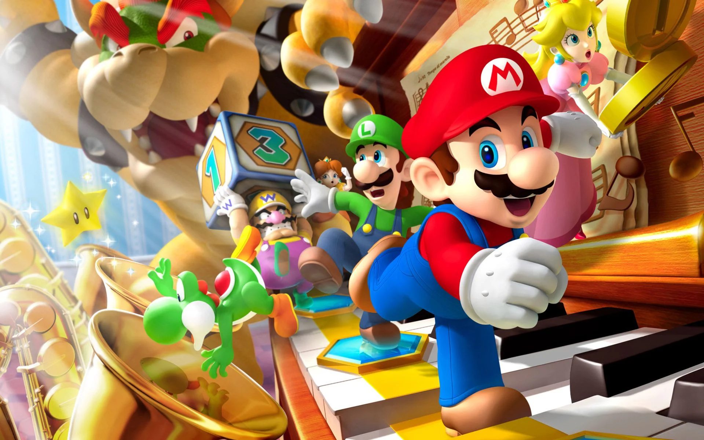

Grand Theft Auto: San Andreas

Grand Theft Auto: San Andreas é um jogo eletrônico de ação-aventura desenvolvido pela Rockstar North e publicado pela Rockstar Games. É o quinto título principal da série Grand Theft Auto e foi lançado em outubro de 2004 para PlayStation 2 e em junho de 2005 para Xbox e Microsoft Windows.
PES

eFootball é uma série de jogos eletrônicos de simulação de futebol desenvolvido e publicado pela Konami desde 1995. Consiste em dezoito jogos principais e vários spin-offs que foram lançados em diversas plataformas diferentes. A série alcançou sucesso crítico e comercial.
Bomberman

Bomberman é uma série de jogos de estratégia, inicialmente desenvolvido pela fabricante Hudson Soft. O jogo original foi lançado em 1983 e novos jogos da série ainda continuam a ser lançados. Hoje, Bomberman estrela em mais de 60 jogos diferentes.
Mario
Super Mario é uma série de jogos eletrônicos de plataforma, criada pela Nintendo, baseada e estrelada pelo encanador fictício Mario. Alternativamente chamada de série Super Mario Bros. ou simplesmente série Mario, é a série central da ampla franquia Mario.